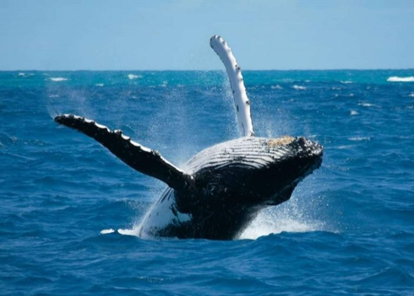

The Enchantment of Dolphin and Whale Watching in Kalpitiya
Kalpitiya, a picturesque peninsula nestled along Sri Lanka's northwestern coast, is a haven for marine enthusiasts seeking captivating encounters with dolphins and whales. This coastal paradise offers an immersive experience in the world of these majestic marine mammals, drawing travelers from around the globe to witness their breathtaking displays of grace and beauty.
A Marine Wonderland:
Kalpitiya's appeal lies not only in its stunning natural beauty but also in its rich marine biodiversity. The waters surrounding Kalpitiya are teeming with life, creating a thriving ecosystem that supports a wide variety of marine species. Among these are dolphins and whales, which grace the waters with their presence, making Kalpitiya a prime destination for marine wildlife enthusiasts.
Dolphin Delight:
Dolphin watching in Kalpitiya is a surreal experience that allows visitors to observe these intelligent creatures in their natural habitat. Kalpitiya is home to several species of dolphins, including spinner dolphins, bottlenose dolphins, and spotted dolphins. These playful creatures often form large pods, showcasing acrobatic displays as they leap and spin through the water, delighting onlookers with their agility and grace.
One of the best times to witness dolphin activity in Kalpitiya is during the early morning hours when they are most active. Visitors can embark on guided dolphin-watching excursions, led by experienced guides who navigate the waters to locate pods of dolphins. The thrill of spotting these magnificent creatures against the backdrop of Kalpitiya's coastal scenery creates unforgettable memories for travelers of all ages.
Whales of Wonder:

In addition to dolphins, Kalpitiya is also frequented by several species of whales, adding another layer of fascination to the marine experience. The waters off Kalpitiya's coast provide a seasonal home to species such as sperm whales, blue whales, and occasionally even humpback whales. These gentle giants of the sea offer a captivating sight as they surface to breathe, their massive forms contrasting against the azure waters of the Indian Ocean.
Whale watching in Kalpitiya is a unique opportunity to witness these magnificent creatures in their natural habitat. Guided whale-watching tours are available, taking visitors on unforgettable journeys to encounter these awe-inspiring marine mammals up close while ensuring minimal disturbance to their environment.
Conservation and Sustainability:
As the popularity of dolphin and whale watching grows in Kalpitiya, so does the emphasis on conservation and responsible tourism practices. Local organizations and tour operators are committed to promoting sustainable tourism initiatives that prioritize the well-being of marine life and their habitats.
Visitors are encouraged to support responsible tourism by choosing eco-friendly tour operators that adhere to guidelines for wildlife observation, such as maintaining a safe distance from animals, avoiding excessive noise and pollution, and promoting education about marine conservation.
The best time to watch dolphins and whales in Kalpitiya can vary depending on the species and their migration patterns. However, there are general guidelines that can help you plan your marine wildlife-watching experience:
Dolphin Watching:
Dolphins in Kalpitiya, such as spinner dolphins, are often most active during the early morning hours, typically from sunrise until mid-morning. This period offers a higher chance of encountering playful dolphin pods as they feed and socialize in the coastal waters.
Whale Watching:
The whale watching season in Kalpitiya is primarily during the months of November to April, with December to March considered the peak months. During this time, you have a good chance of spotting various whale species, including blue whales and sperm whales, as they migrate through the area. Boat tours usually depart in the mornings or afternoons, depending on the specific tour operator and weather conditions.
It's important to note that weather conditions and the movements of marine mammals can be unpredictable, so it's advisable to check with local tour operators or guides for the most up-to-date information on the best times for dolphin and whale watching during your visit to Kalpitiya.
NOTE:-
If you like to watch dolphins and whales,
you can know about the prices and packages
from the hotels mentioned on our home page
and can book.